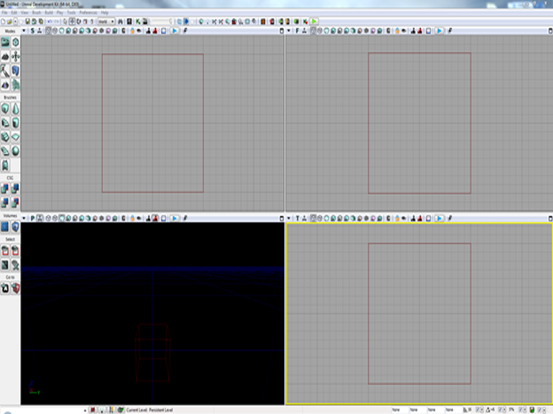
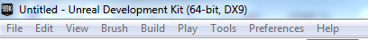
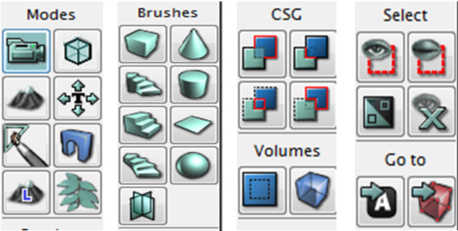
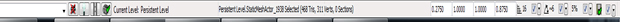
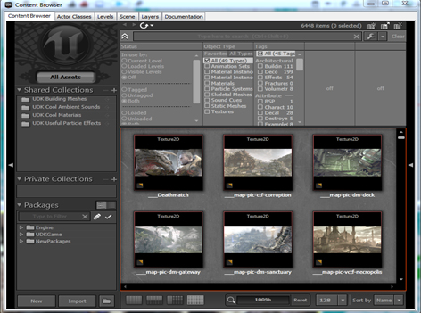
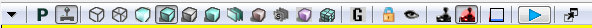
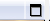
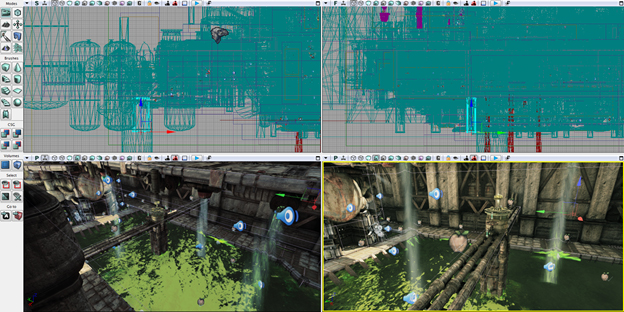
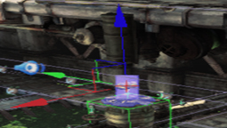

Introduction to UDK and User Interface:

Contents:
1. Introduction to UDK
2. User Interface
1.Introduction to UDK
What is UDK??
The Unreal Engine is a game engine developed by Epic Games. Its core is written in C++, the Unreal Engine is used by many game developers today. Even many studios started using unreal engine. Unreal Engine 1 was first developed in 1998 and Unreal Engine 2 was developed in 2002. Unreal development kit using unreal engine 3 technology was released in 2009 which was free for non-commercial use. Unreal Engine 3 can use DirectX 9/10/11. The better version of directx, the better the graphics but it will require much powerful graphic cards.
Games like Batman: Arkham Asylum, Gears of war, Unreal tournament 3 were developed using Unreal Engine. Which means you will be using the same technology that was used in those million dollar games.
Isn't it exciting???
So let us get going..
Why UDK??
This is a very important question. Consider them:
1. UDK Compared to other engines
2. UDK Compared to programming from scratch.
1. UDK Compared to other engines:
Unity:
Many users say that Unity is easier to use and learn but I think UDK is simpler than Unity.
Comparison:
1. Unity severely lacked the DirectX 11 features but now they have updated it recently.
2. UDK creates visually better games than Unity.
3. Users who have minimum knowledge of softwares like MAYA or 3DS Max will be comfortable with UDK.
4. UDK has mostly simple and straight forward options.
Cry-Engine 3:
It is true that Cry Engine can render the game better (In terms of graphics).
Comparison:
1. UDK is easier than Cry Engine for beginners.
2. UDK has visual scripting language - KISMET. General functions of a game can be easily programmed.
3. The licensing options are much better.
4. More number of games are produced through UDK than through Cry Engine.
Other Engines like Id.Tech 4, renderware are obsolete or too complex.
2. UDK Compared to programming from scratch:
This is straight forward. Programming from scratch is a very lengthy process and developers will have to write many lines and lines of codes. A game engine handles most of the code for us and reduces a lot of work. In a game engine, we build levels and all the other criteria such as game physics, rendering and memory management is managed and handled by the engine. In a game built from scratch, the programmer has to manage each and every thing.
Requirements:
To learn UDK, you'll need 1. Unreal Development Kit which is available for free on their website. Download it here.
2. Basic idea about 3D gaming Co-ordinates (x,y,z - axes)
3. Lots of patience and interest.
4. Modeling softwares like Blender, Maya, 3DS Max etc. (Completely optional. Not used in this Guide) and texturing tools like Photoshop.
This guide is for people who don't even know what UDK is.
2.User Interface
The User Interface is much easier for the people who have experience with 3D tools like Blender, 3DS max etc. Others need to put little more effort to understand the User Interface as it may be tricky to learn.
The user interface:

When we open the UDK, we can see this window. By default, a map with lighting is displayed. I opened a new map by clicking on "File->New->Blank Map."
I have purposely opened a blank map as it is easier to explain the concept of lighting. "We think about light when there is darkness".
Viewports:
You can see that the majority of the screen is occupied by four big boxes. They are called viewports. We edit the level inside them. The four viewports display the level from four different angles. The first one is Top view (located in the top-left). The second one is the side view (located in the top-right). The Third one is the perspective view (located in the bottom-left) and the fourth one is the front view (located in the bottom-right).Think of it this way: Take a camera and photograph your house in various angles. If we view your house in UDK (by designing it or doing something else which is irrelevant),
1. The top viewport show the satellite view of the house.
2. The side viewport shows the side view of the house like windows etc.
3. The Perspective viewport shows the 3-Dimensional view of the house.
4. The front viewport show the main door of the house.
All the viewports except the perspective viewport are shown in the wire frames. The navigation and other details will be explained later.
Standard Menu Bar :
This is similar to the standard menu bars in many other applications.
The most common options need not be discussed and some specific options will be discussed later.
The Main Toolbar:
It has most commonly used buttons for quick access.The Tool Box:
We can find a set of buttons on the left hand side of the screen.
As we can see in the images, the toolbox is divided into Modes, Brushes, CSG, Volumes, Select and Go to.
Their names indicate their functions.
Modes:
In the camera mode, we can view the level. In the geometry mode, we can modify the shapes of objects inside the level. In the terrain mode, we can adjust the terrains.Brushes:
They are used to populate the level. We can add cubes, cylinders or any other shape from here.CSG and Volumes:
They will be demonstrated In the next chapter.Console Bar:
It is used to show information about the assets we are using etc.
You cannot see these options until you open a level or start developing one. At the centre of the console bar, we can see the names of the assets we are using. On the immediate right side of it, we can see four boxes with numbers in it. That is the scale box. It scales or resizes the object. Then we have a few check boxes which show their names when highlighted. We have snap to grid checkbox whose value changes the drag rate of shapes. Other buttons are explained when they are encountered.
Content Browser:
It is the place where all our assets are displayed. It acts as a showcase of our assets.It is not visible by default but can be viewed by clicking on content browser button on main tool bar or Goto view -> browser windows -> content browser.

That's it for this section and in the next section. We will see the viewports, navigation of viewports and buttons located above the viewports. Don't forget to practice what you have learnt.
Viewports :
We have already seen the location and the functions of viewports above. We edit the level inside them. The four viewports display the level from four different angles. The first one is Top view (located in the top-left). The second one is the side view (located in the top-right). The Third one is the perspective view (located in the bottom-left) and the fourth one is the front view (located in the bottom-right).Navigating in the viewports and viewport toolbars:
Navigation:
Well, there are few methods of navigating in the perspective viewport but here we are not going to learn all of them but few of them. Three kinds of navigation are explained here:1. Generally, most computers have number pads on their keyboards.
1. 8 key to go forward
2. 2 key to go backward
3. 6 key to go right side
4. 4 key to go left side
5. 7 key to go down
6. 9 key to go up
7. 1 key to zoom out
8. 3 key to zoom in
This is pretty easy and you'll not get confused easily. You must have observed that we have not used the mouse in this navigation. There is another navigation method which is easier.
2. Are you a regular PC gamer?? Regular PC gamers use the keys WASD with a lot of ease.
This is pretty simple. Just hold on to the right mouse Button and use the WASD keys to navigate through the perspective view.
3. There is one more way is more of a complicated version.
1. Drag holding left mouse button to zoom in or out.
2. Move the mouse holding right mouse button to rotate.
3. Drag holding both Left and right mouse butons to move up or down.
There is one more way.
4. This is for the people who are related to maya development. Holding down the 'u' key changes the mouse controls as in Maya.
Viewport Toolbars:

This is the viewport toolbar.Each viewport has this toolbar and all are mostly the same. In the above picture, we have missed an option.

This button is located away from all the other buttons. This is the maximize viewport button. It maximizes the viewport which helps to simplify the editing of a level.
To simplify learning of UI, let us open a file. I've opened a file DM-Deck.udk. All the changes I refer to should be made in the perspective viewport unless I mention the name of the viewport to change.
The options from left to right:
Viewport Options:
All the buttons you see on the viewport toolbar are present inside this viewport options. There are few more options which will be explained later.Viewport type button:
You can see the first letter of the name of each view in its toolbar.For instance, in the perspective viewport, the viewport type button has a 'P' on it and 'T' on the top viewport toolbar etc. We can toggle the viewports.

You can observe that I have changed the front view into the perspective viewport and I am seeing the same area of the map in two different angles. This eases the position of static meshes etc.
Realtime:
This option is very useful. By enabling it, you can see the changes you do in realtime. To understand it well, click on any object in the map and you'll see a transition widget.
Now turn off the realtime option in the front viewport (Just click on it) and drag the red-arrow with the Left mouse button in the perspective viewport. What did you observe?? In other viewports, nothing has happened when you were dragging the object but its position was changed when you have released the left mouse button. Now, repeat the same process by turning on the realtime option (Just click on it again) and see the difference. What did you observe now?? The position of the object was changing in the front viewport when you were changing its position in the perspective viewport. You always can toggle on or off realtime in any viewport.
Brush Wireframe:
By selecting this option, we can see the level in the form of wireframes. There is no texture display. Here you can view and update BSP brushes. BSP brushes form basic shapes of objects and the level. It will be explained in detail later.Wire Frame:
This is similar to the above mode but here we cannot view or update the BSP brushes.Unlit mode :
This mode show the level without any kind of lighting. Just the textures are shown.Lit mode:
This mode shows the level clearly even when lights are not placed in the level.Detail Lighting Mode:
It shows the lighting and colorless textures only. Easy to observe the lighting and shadow effects.Lighting only:
This Displays only the lighting with no textures. Only the shapes of objects are shown. No colors or textures are shown.Light Complexity:
On clicking this button, we can see our perspective viewport turn green. If the level is in green, it means that the assets in the level are affected by one light only.Texture Density:
This is more of a color density in the map. The lesser dense areas are indicated in green and dense areas are indicated in orange color. This affects the performance of the CPU.Game Mode:
This will show us the level exactly how the player would see it while playing.Other options:
Shader Complexity, light map density, lighting with texel density etc. are different view modes. They will be explained when they are encountered in the later chapters.So this is the end of the first Chapter- Introduction and UI. Hope you liked it and understood.